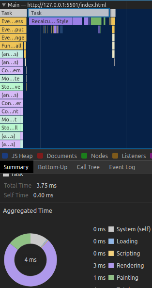

Performance Audit
Introduction
In order to scale up and also to improve the application, a performance audit has been carried out to assess todos application against a competitor site. Information gleaned from the performance audit can inform our decisions we make when scalling the application in the future.
A Look at a Competitor: TodoListMe
The website of TodoListMe features more functionality with feature such as:
- Assigning tasks to dates
- Task lists such as: "Projects", "Things to do later"
- Ability to drag and drop a task to a list
- Animations
- Ordering of the tasks by alphabet or top 3
- Create new custom Lists
- Ability to sync your todo list
- View the todo list through a small remote window
- Advertisement
Having extensive functionality is excelent, however all of these features come at a cost regarding the performance of the website. When scaling our application, we need to decide what features are most important and how to impliment these features well with minimal impact to the performance of the application.
Performance Comparrison
A performance audit was completed for both sites using Chromium DevTools with an overiew of the results shown in the image below. Both tests used an applied slow 4G connection and 4x slowdown of the CPU. This is to replicate real life conditions a user might have when accessing your site.
todos(our site)
TodoListMe(competitor site)

- First Contentful Paint marks the time at which the first text or image is painted.
- Speed Index shows how quickly the contents of a page are visibly populated
- Time to interactive is the amount of time it takes for the page to become fully interactive.
- First Meaningful Paint measures when the primary content of a page is visible.
- First CPU Idle marks the first time at which the page's main thread is quiet enough to handle input.
- The maximum potential First Input Delay that your users could experience is the duration, in milliseconds, of the longest task.
With a first meaningful paint time of 7900ms on TodoListMe vs 1400s for todos, the user is waiting a long time before they see primary content on the page. This will frustrate the customer and make it less likely the customer will use the application in the future.
A maximum first input delay of 320ms will test users that do not have patence and will result in some users leaving the site, before using all that it offers.
The results also show us that our competitors site loads the content of the site a lot slower than our site, with a much slower time of 7900ms vs 2000ms before the site is interactive. This can negatively affect the user experience of the site as it may appear as the content is broken when in reality it has yet to load. It could even cause a user to immediately leave your site as shown by the bouncerate the graph below:
Competitor Analysis: Load Times
How could TodoListMe's site improve the performance of the site?
- Minify JS - The CSS files have been minified which is good, however the JS files have not and this could reduce the size of the files by removing comments, whitespace, unused code, using short variable and function names ect. This could save ~260ms.
- Image formats - JPEG 2000, JPEG XR, and WebP often provide better compression than PNG or JPEG, which means faster downloads and less data consumption. This could save ~1320ms.
- Reduce HTTP requests - The site makes 32 JS file requests with 20 external JS files. Combining some of these can reduce the number of HTTP requests made
- Remove JQuery - The JQuery file requests are responsible for 592KB/2.9MB resources. By removing these files and using plain JS, the load time would decrease.
-
CSS Spites - The site uses lots of .png files such as
 . By
combining multiple images into a single image file, several
images can be loaded into a single HTTP request. Because
browsers limit the number of requests a site can make
concurrently, this can lead to decreased load times.
. By
combining multiple images into a single image file, several
images can be loaded into a single HTTP request. Because
browsers limit the number of requests a site can make
concurrently, this can lead to decreased load times.
- Blocking First Paint - Stop resources from blocking the first paint of your page. Items such as the Abel-Regular, Architects Daughter fonts and JQuery CSS file. This can be achieved by defering non-critical JS/styles. This could save ~1110ms.
- Take advantage of browser caching - By storing certain key files such as logos and images in a users browser, when a user returns to the site they will not need to download these files, therefor reducing the load time of the site.
- Background Image - For users with slow internet connection, the background texture.png with a size of 129KB can cause the page to load slowly with little benefit.
- Remove Advertisement - The advertising on the site increases the load time and this could be improved by removing it, however if this is a revenue stream for the site, this might not be an option.
An estimation of the load time savings some of these suggestions
Competitor Analysis: Add Item
Using Chromium DevTools we can analysis the difference in the performance of the two applications when a user adds a new todo item to the list. There are 3 main aspects that we can observe in the performance: scripting time, rendering time and painting time.
todos(our site) - performance when adding a new item
TodoListMe(competitor site)- performance when adding a new item
Comparison
| Aspect | todos (ms) | TodoListMe (ms) |
|---|---|---|
| Scripting | 8ms | 40ms |
| Rendering | 3ms | 5ms |
| Painting | 2ms | 1ms |
| Total | 12.63ms | 49.79ms |
This comparrison shows us that todos application loads and renders adding an item much faster, particularly when it comes to the scripting aspect. However it should be noted that todos is not perfect and that other sites are able to achieve the same functionality in less than half the time and that todos code could be greatly optimized.
Scaling our own application
When scaling our own application it will be important to only include functionality that is important to our users, information that could be found out by getting to know our users through market research. By having a clear idea of what our users desire, we can develop the application they need, not what we think they want. By having this approach, we can develop a very efficient, responsive application with the functionality most important to our users.
When scaling our application; to optimize performance we should:
- Minify Files - To optimize the size of our files we should minify them to reduce download and load times.
- Images Formats - Use modern format files that provide better compression.
- CSS Sprites - Combine images into single files to reduce the number of HTTP requests the user's browser will make and use CSS sprites to access the individual images.
- Reduce Script Dependencies - Try to avoid using an external libary when there are more efficient options. E.g. avoid using JQuery when plain JS is sufficient
- Use Async Where Possible - To ensure you do not block the view, use async to download dependencies, so that the browser can complete other tasks while it is waiting for the dependency to download.
- Cache Files - To save users from downloading frequently needed files e.g. icons and logos, have the users browsers save certain files into their browser cache, so when they return to the site they already have some files needed for the site to load.
Bug Fixes
Introduction
From the original release there have been a few bugs that affected the functionality of the code. These bugs involved; a typo, possible ID duplication and a missing id tag on a HTML element. Details of the bugs can be found below:
No.1 Bug Fix - Typo in the code
In line 95 of the code, the function is defined with the text: "adddItem" which should be: "addItem" as the function is called with the spelling throughout the rest of the application. This was a very fatal bug that broke many aspects of the application. The bug was solved by simply correcting the spelling mistake
Original code
Updated code
No.2 Bug Fix - Possible ID duplication
In lines 84-88, the method for generation of IDs introduces the possibilty of duplicating IDs, because there is no check to see if an ID of the same value already exists in the data already stored. Because the likelyhood of randomly generating two identical 6 diget numbers is very unlikely, the bug is not critical. Nevertheless, it would create critical errors for the application so we have fixed this bug. We deleted lines 84-88 which originally generated an ID. Then modified line 104 to generate an ID using Date.now(), this method also generates an ID only when needed, therefor improving the efficiency of the code.
Original code
Updated code
No.3 Bug Fix - HTML element missing ID
Within the section.main html element, the toggle all button input element did not have an id that the javascript code uses to add an event listener when the application starts. As a result, the toggle all button failed to work. This bug was fixed by adding id="toggle-all" into the input element on line 18.
Original code
Updated code